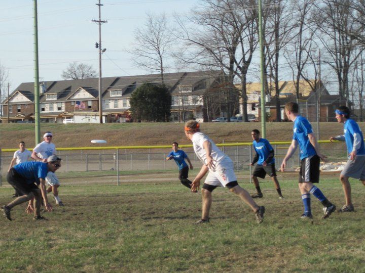
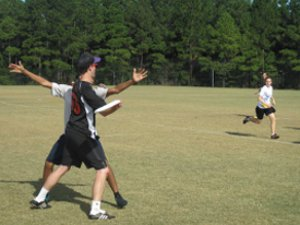
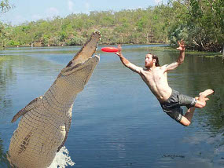

To me ultimate frisbee is all about having fun with your teammates.
There's nothign better than winning a game or a tournament with the team.
The number of players each team can have on the field at one time is 7.
The game starts when one team pulls the disc to the other team. Pulling means throwing the disc from your endzone to your opponents endzone.
The first team to score 15 points wins the game.
When you catch or pick up the disc you have to stay still. If you get the disc and start moving with it,
it's a travel and the player has to go back to the spot where he cautgh the disc. You can pivot with the disc though.

The most common plays on offense are the vertical stack and horizontal(also called ho-stack) stack.
More info on the vertical stack!
More info on the ho-stack!
If the defense forces the zone, then the offense would have to throw a zone offense.
More info on the zone!
So these are the basic offensive and defensive strategies that you'll see in a game. These plays can be confusing at first, but once you get out to pracitce and get a better understanding for the game this will all become second nature.
In order to score a point, the offensive team has to work the disc down the field into the opposing team's endzone. The defensive team can also score if they get a callahan, which can be done by intercepting the disc in the opposite team's end zone while they are on offense.

This is a basic mark on a defender.
Force just means which side of the field you are forcing the person throwing the disc (handler) to throw the disc.
The three types of forces are home, away, or straight up. Forcing home means that the handler is being forced to throw a back-hand.
Forcing away means that the handler is being forced to throw a flick.
Forcing straight up means that the defender is marking right in front of you and trying to block you both ways.
When you recieve the disc, you have ten seconds to pass it to one of your teammates, if you are being defended. This is called a stall count and when you get stalled you lose possession of the disc to the defense. The defense can also force a turnover by intercepting the disc, forcing a throw away, or by blocking the disc. Also if the offensive team drops the disc or throws the disc out of bounds it's also a turnover. So it is very important to take care of the disc.
 In ultimate when you catch the disc over a defender it's called a sky.
It's always a great accomplishment when you can go up against someone and come down with the disc, and your teammates love it.
An even better accomplishment and probably the best play to make in ultimate is the layout. It is also one the hardest plays to make.
Getting a successful layout takes good timing and a good read on the disc.
In order to do it, you have to jump horizontally with one hand extented out to catch the disc, then land on your chest.
It's a hard thing to accomplish at first and takes a lot of practice, but when you finally do it, it's a great feeling.
In ultimate when you catch the disc over a defender it's called a sky.
It's always a great accomplishment when you can go up against someone and come down with the disc, and your teammates love it.
An even better accomplishment and probably the best play to make in ultimate is the layout. It is also one the hardest plays to make.
Getting a successful layout takes good timing and a good read on the disc.
In order to do it, you have to jump horizontally with one hand extented out to catch the disc, then land on your chest.
It's a hard thing to accomplish at first and takes a lot of practice, but when you finally do it, it's a great feeling.

This sport is a very competitive sport, but the main thing to remember is to always have fun. You should never play a sport if you don't intend to have fun.
When you get the disc don't get nervous and think you have to get rid of the disc, instead take a deep breath and take your time with the disc.
You have ten seconds with the disc, which is a lot of time make a smart play and find an open player.

Copyright 2012 Flying Snatch